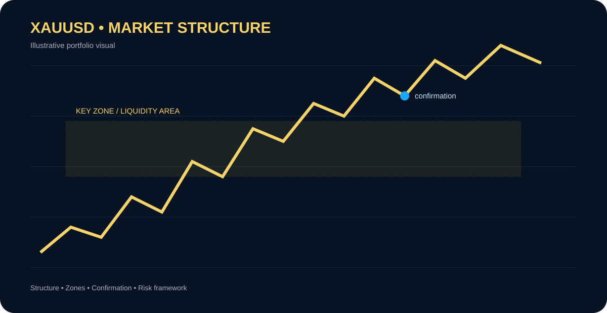

CASE STUDY 01 • SELF-INITIATED
Gold Sniper Pro — XAUUSD Market Intelligence
A TradingView/Pine Script concept designed to organize market structure, key zones and trade context for gold traders.

What it demonstrates
- Structured XAUUSD market analysis
- Multi-timeframe context
- Visual identification of important zones
- Repeatable trading workflow
Problem
Traders can struggle to keep market structure, zones and confirmation rules organized on fast-moving charts.
Approach
Create a focused TradingView workflow that makes important market information easier to see and review.
Responsible use: This tool is for analysis and education. It does not guarantee profitable trades or investment returns.